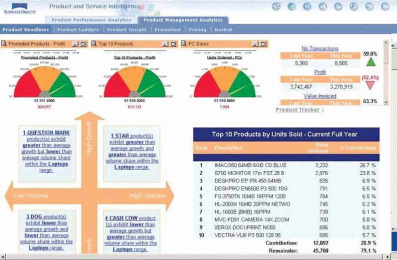

Lesson 9:
Information Dashboard Design
Content
Introducing information dashboard
Information dashboard design best practices
Common mistakes in dashboard design
Ideal graphs for information dashboard
- Bullet graph
- Sparklines
- Bandlines
Introducing information dashboard

Why are dashboards so important?
- A well-designed performance dashboard helps you to see more clearly by helping you to understand each fact more quickly so you can find patterns in the storm.

Classifying Dashboards by Role
Dashboards for strategic purpose
Dashboards for operational purpose
Dashboards for analytics purpose
Dashboards for operational purpose

Dashboards for strategic purpose
Dashboards for analytics purpose

Best Practices for Dashboard Design
- Preparing stage
- Target the user
- Know what value your dashboard will add
- Display only actionable information
- Design stage
- Right tool for the right job
- Context
- Layout and clarity
- Visual aesthetics
Preparing stage: Target the user

Preparing stage: User-centered Design Process

Preparing stage: A User-Centric Dashboard Design Guide

Preparing stage: A User-Centric Dashboard Design Guide
Who is my target audience?

Preparing stage: A User-Centric Dashboard Design Guide
What value will the dashboard bring?
- Help management define what is important.
- Educate people in the organization about the things that matter.
- Set goals and expectations for specific individuals or groups.
- Help executives sleep at night because they know what’s going on.
- Encourage specific actions in a timely manner.
- Highlight exceptions and provide alerts when problems occur.
- Communicate progress and success.
- Provide a common interface for interacting with and analysing important business data.
Preparing stage: A User-Centric Dashboard Design Guide
What type of dashboard am I creating?

Preparing stage: A User-Centric Dashboard Design Guide
Information Discrimination
Find the core
Ask a better question
Push to the appendix
Reporting vs exploration

Preparing stage: A User-Centric Dashboard Design Guide
Choosing the perfect metric

Preparing stage: A User-Centric Dashboard Design Guide
Choosing the perfect metric

Ideal graphs for information dashboard
Right tool for the right job?
An assortment of typical dashboard gauges

Ideal graphs for information dashboard: Bullet Graphs
- Bullet graphs to replace gauges.
Bullet graph design specifications

Ideal graphs for information dashboard: Sparklines
- A sparkline is a very small line chart, typically drawn without axes or coordinates.

Reference: Sparklines
Pre-attentive with colour and symbol

Aspect ratio
- A graphic’s width/height ratio makes a big difference in displaying data.
Unintentional optical clutter
- Areas surrounding data-lines may generate unintentional optical clutter. Strong frames produce melodramatic but content-diminishing visual effects.

Sparklines best practice
- Enriched with context
Sparklines best practice
- Use reference line to provide context

Sparklines best practice
- Use reference region to provide context

Reference: Sparklines in ggplot2
Best Practices for Dashboard Design
Common mistakes in dashboard design
Exceeding the boundaries of a single page
Supplying inadequate context for the data
Displaying excessive detail or precision
Exposing measure indirectly
Choosing inappropriate display media
Introducing meaningless variety
Using poorly designed display media
Encoding quantitative data inaccurately
Common mistakes in dashboard design
- Exceeding the boundaries of a single page and requiring the viewer to scroll

Common mistakes in dashboard design
- Fragmenting data into separate screen

Common mistakes in dashboard design
- Displaying excessive detail or precision

Common mistakes in dashboard design
- Introducing meaningless variety
Common mistakes in dashboard design
- Arranging the data poorly

Common mistakes in dashboard design
- Highlighting important data ineffectively or not
Common mistakes in dashboard design
- Cluttering the display with useless decoration

Common mistakes in dashboard design
- Misusing or overusing colour
Common mistakes in dashboard design
- Designing an unattractive visual display

Common mistakes in dashboard design
- Design that failed to reveal KPIs effectively
Alternative dashboard design
- Design that reveals KPIs effectively
Common mistakes in dashboard design
- Design with poor layout and clarity
Alternative dashboard design
- Design with good layout and clarity
Common mistakes in dashboard design
- Design with poor visual aestheticsness

Alternative dashboard design
- Design with good visual aestheticsness